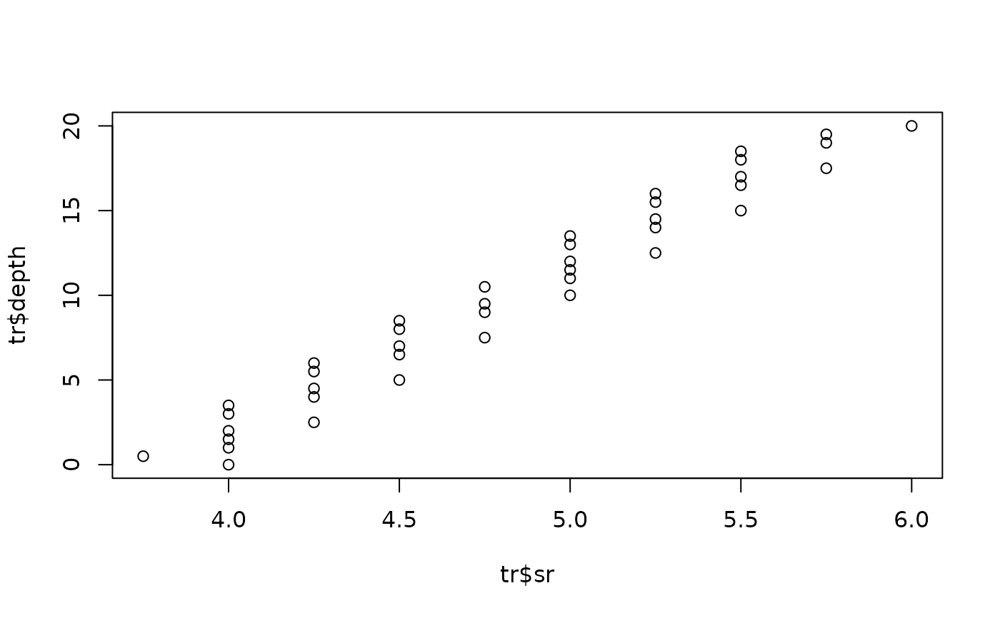

Tracks sedimentation-rate paths through the per-window
correlation peaks of an eCOCO result, following Acycle's legacy tracking
routines. Peak locations (row indices of the n_peaks largest score
values per window that pass the correlation, p-value and orbit-count
criteria) are found as in eccpeaks.m. mode = "slices" reproduces
ecocotrack.m: the windows are divided into n_slices depth slices
(sharing boundary windows); in every slice a path is started from each
trial rate between min(sr) and max(sr) in steps of sr_threshold,
following the nearest peak within sr_threshold (reference = median
of the last five tracked rates, ecocotrackn.m method 1). Candidate paths
are summarised with eccount.m (mean/median rate, number of windows, mean
rho, mean p, summed pCOCO, summed orbit count), sorted, filtered
(mean rho >= rho_min, mean p <= p_track_max, summed orbit
count >= norbit_min, near-duplicate solutions within
sr_threshold removed) and the solution with the largest summed
pCOCO is kept. mode = "single" reproduces ecocotrackn.m for one
path started at initial_sr (reference "median5" = method 1,
"previous" = method 0).
Translated from Acycle v3.1 ecocotrack.m, ecocotrackn.m, eccount.m and
eccpeaks.m (Mingsong Li).
Usage
ecoco_track(
ecoco = NULL,
sr = NULL,
depth = NULL,
rho = NULL,
p = NULL,
pcoco = NULL,
norbit = NULL,
score = NULL,
location = NULL,
mode = "slices",
n_peaks = 3,
rho_min = 0.3,
p_max = 0.05,
p_track_max = p_max,
norbit_min = 3,
sr_threshold = 2.5,
n_slices = 5,
initial_sr = NULL,
reference = "median5",
genplot = FALSE
)Arguments
- ecoco
eCOCO result (list) with elements
sr,depth,rho,p_global,pcocoandnorbit, e.g. the output ofecoco_blocked,ecoco_interleavedorecoco_adaptive. When given, it replacessr,depth,rho,p,pcocoandnorbit.NULLmeans that these must be given explicitly.Default=NULL.- sr
Sedimentation-rate grid, in cm/kyr (numeric vector with a constant step, one value per row of the maps). Only used (and then required) when
ecoco=NULL.Default=NULL.- depth
Depths of the window centres, in metres (numeric vector, one value per column of the maps); only used when
ecoco=NULL.NULLthen uses the window numbers1, 2, ....Default=NULL.- rho
Correlation coefficients (numeric matrix, rates in rows, windows in columns); used to filter peaks and paths with
rho_min. Only used (and then required) whenecoco=NULL.Default=NULL.- p
P-values (numeric matrix of the same size as
rho), e.g. global Monte Carlo p-values; used to filter peaks withp_maxand paths withp_track_max. Only used (and then required) whenecoco=NULL.Default=NULL.- pcoco
pCOCO values (numeric matrix of the same size as
rho); the path with the largest summed pCOCO is kept in each slice. Only used (and then required) whenecoco=NULL.Default=NULL.- norbit
Number of contributing orbital periods (numeric matrix of the same size as
rho); used to filter peaks and paths withnorbit_min. Only used (and then required) whenecoco=NULL.Default=NULL.- score
Map searched for the per-window peaks (numeric matrix of the same size as
rho);NULLusespcoco(or thepcocoelement ofecoco).Default=NULL.- location
Peak locations that replace the automatic peak search (eccpeaks step): an integer matrix of row indices into
sr,n_peaksrows by windows,NAwhere there is no peak;NULLfinds the peaks fromscore.Default=NULL.- mode
Tracking mode (character):
"slices"(Acycle ecocotrack.m: the windows are divided inton_slicesdepth slices, paths are started from trial rates everysr_thresholdand the best path is kept in each slice) or"single"(Acycle ecocotrackn.m: one path started atinitial_sr).Default="slices".- n_peaks
Number of peaks (largest score values passing the criteria) kept per window (integer, >= 1).
Default=3.- rho_min
Minimum correlation coefficient of a peak and of the mean of a path (numeric, -1 to 1).
Default=0.3.- p_max
Maximum p-value of a peak, on the same scale as
p(numeric).Default=0.05.- p_track_max
Maximum mean p-value of a path in
mode="slices"(numeric).Default=p_max.- norbit_min
Minimum number of contributing orbital periods of a peak and minimum summed number of a path (numeric, >= 0).
Default=3.- sr_threshold
Search radius around the reference rate when following the peaks, and spacing of the trial starting rates in
mode="slices", in cm/kyr (numeric, > 0). Larger values allow larger rate jumps between windows.Default=2.5.- n_slices
Number of depth slices (sharing their boundary windows) in which a path is tracked separately in
mode="slices"(integer, >= 1).Default=5.- initial_sr
Starting sedimentation rate of the path in
mode="single", in cm/kyr (numeric);NULLuses the rate with the highest score in the first window.Default=NULL.- reference
Reference rate used to find the next peak in
mode="single"(character):"median5"(median of the previous five tracked rates) or"previous"(previous tracked rate).Default="median5".- genplot
Plot the tracked sedimentation rates against depth (logical, TRUE or FALSE).
Default=FALSE.
Value
A list with depth, sr (tracked rate per window,
NA where untracked), index (row index into the rate grid),
location (peak row-index matrix); for mode = "slices" also
slice_range (window indices of the slice boundaries),
paths (rate-index paths of all trial rates, rows = trial rates) and
summary (per slice matrix of the eccount statistics: mean index,
median index, n, mean rho, mean p, summed pCOCO, summed orbit count;
rejected solutions NA).
References
Li, M., Kump, L.R., Hinnov, L.A., Mann, M.E., 2018. Tracking variable sedimentation rates and astronomical forcing in Phanerozoic paleoclimate proxy series with evolutionary correlation coefficients and hypothesis testing. Earth and Planetary Science Letters 501, 165-179.
Examples
# \donttest{
sr <- seq(1, 10, by = 0.25)
depth <- seq(0, 20, by = 0.5)
true_sr <- 4 + 2 * depth / 20
rho <- matrix(0, length(sr), length(depth))
for (j in seq_along(depth)){
rho[, j] <- 0.8 * exp(-(sr - true_sr[j])^2 / 0.5)
}
p <- matrix(0.01, length(sr), length(depth))
nor <- matrix(9, length(sr), length(depth))
tr <- ecoco_track(sr = sr, depth = depth, rho = rho, p = p,
pcoco = 2 * rho, norbit = nor, n_slices = 2)
plot(tr$sr, tr$depth)

# }